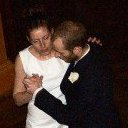

Tango classes in Glasgow
Tango classes in GlasgowDiscover the true authentic Argentinean Tango as it was danced in the Salons of Buenos Aires in the Golden Age.
Vintage 1940s Tango classes in Glasgow with Catherine Daniela Dogaer and Wim Taghon.
Absolute Beginners Authentic Argentine Tango - October 2014
The next series of Absolute Beginners Tango Classes in Glasgow starts on Friday 10 October at 6.15pm in Glasgow Westend.
Bookings for the series of classes are now open, you get an Early Bird discount if you book before 15 Sept. Bookings are on a first-come, first serve basis. Previous years there has been a waiting list.
There is an optional free taster class on Friday 3 October, 6.15pm. Contact us at contact@tangotipica.info to get an invitation.
• Series:
The series consists of an (optional) free taster on Friday 3 October and 8 classes on Fridays 6.15pm-7.15pm, starting Friday 10 October.
• Location: Glasgow West End, in Turnbull Hall, 13-15 Southpark Terrace, Glasgow G12 8LG - details & map
• Total fee for the series: Early Bird discount (before 15 Sept): 57 GBP; after 15 Sept: 62 GBP per person. All our proceeds go to local children's charity With Kids.
• Dance partners: You need to enrol with a dance partner - more
Bookings - either:
• By post: Please send a cheque (payable to With Kids) to the With Kids Office, 15 Annfield Place, Glasgow G31 2XE. Please add a note with both dancers' names and email addresses.
• Online: Via JustGiving to With Kids. Please enter a note with your email address so we can confirm your booking.
You need to enrol with a dance partner.
Our terms and conditions


 Subscribe to our Facebook page
Subscribe to our Facebook page
| Dean & Karolina: "We keep telling everyone you guys should teach others how to teach as you are so good at what you do :). With your attitude and enthusiasm I feel sorry for everyone who isn't enrolled in your classes haha they miss out on life's great pleasure." (Dec 2012) | |
| Lesley & Craig: "Catherine and Wim are fabulous instructors. They explain the moves really well, encourage you and also allow you to express your own style when you become more confident. I highly recommend this tango class :)" (Jan 2013, dancing with Tango Tipica since 2010) On Facebook |
| Tunde & Lindsey: "I have been to lots of dancing classes over the years and tried Tango a couple of times before. Catherine and Wim are fantastic teachers and make a dance I previously found very difficult far easier. A great way to spend a Friday early evening." On Facebook | |
|  | Tom & Emilie: "Their class is very enjoyable, while they are approachable and friendly. Very fast learning, with almost immediate 'results' too." (Sept 2013) On Facebook |
| Learning in the company of friends: "For more than four years we've driven a hundred and twenty five miles to Glasgow every Friday to dance tango with Tango Tipica. After two years, Catherine and Wim had given us the confidence to join an international tango holiday in Italy, which introduced us to different styles of tuition. The experience was good for us, but it was such a pleasure to return to Tango Tipica where Catherine and Wim's teaching is structured, enthusiastic, sensitive, often challenging, always enjoyable and very effective." Peter & Maureen (Jan 2014) |
Intake of new pupils is at Beginners level only. We welcome Beginners from all age groups – the authentic Argentinean Tango does not involve any acrobatics. Note that you need to enroll with a dance partner.
After each level you will progress to the next.
| Time of year | Level | Day | Type of class | Location |
|---|---|---|---|---|
| October 2014 to December 2014 | Absolute beginners: no dance experience
(Tango: the thing for you?) |
Fridays | Series | Glasgow West End |
| Level 4: Advanced Tango Tipica pupils only |
Fridays | Series | Glasgow West End | |
| January 2015 to April 2015 | Level 2: Improvers Tango Tipica pupils only |
Fridays | Series | Glasgow West End |
| Level 5: Advanced 2 Tango Tipica pupils only |
Fridays | Series | Glasgow West End | |
| April 2015 to June 2015 | Level 3: Intermediate/Advanced Tango Tipica pupils only |
Fridays | Series | Glasgow West End |
| Level 6: Advanced 3/Master Tango Tipica pupils only |
Fridays | Series | Glasgow West End |
It takes two to tango. The essence of Argentinean Tango is improvisation and the subtle art of leading and following. Unlike other dances, there are no set combinations or routines you can learn on your own.
We ask you to book with a dance partner. This ensures numbers of leaders and followers are balanced and no-one has to sit out.
Our Tango classes are held in Glasgow West End, in Turnbull Hall (Chaplaincy), 13-15 Southpark Terrace, Glasgow G12 8LG, between Kelvinbridge Underground and Hillhead Underground (Google maps and a simplified map with a photo of the hall).
You think you're not the dancing type? So did we until we discovered the Argentinean Tango. To dance the Tango, you don't need that elusive 'natural sense of rhythm'.
Argentinean Tango is a restrained, stylish improvisation dance – steps can be combined in endless variations.
You're warned, once you're dancing, it's a passion for life!
You don't need dancing shoes but bring a pair of closed-toe shoes with smooth soles if you can (leather or other smooth material) [read more about dancing shoes]. It may be a good idea to bring also a bottle of water.
Check out our quick guide to tango music.
By enrolling in our classes you agree to our terms and conditions:
Tango Tipica: Argentinian Tango in Glasgow  Last verified: 16 June 2014
Last verified: 16 June 2014

 Classes
Classes